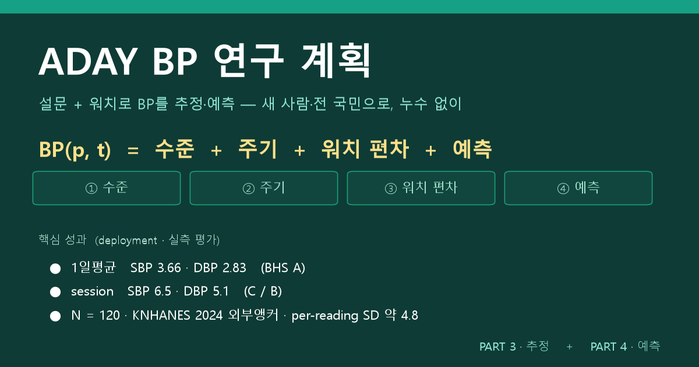
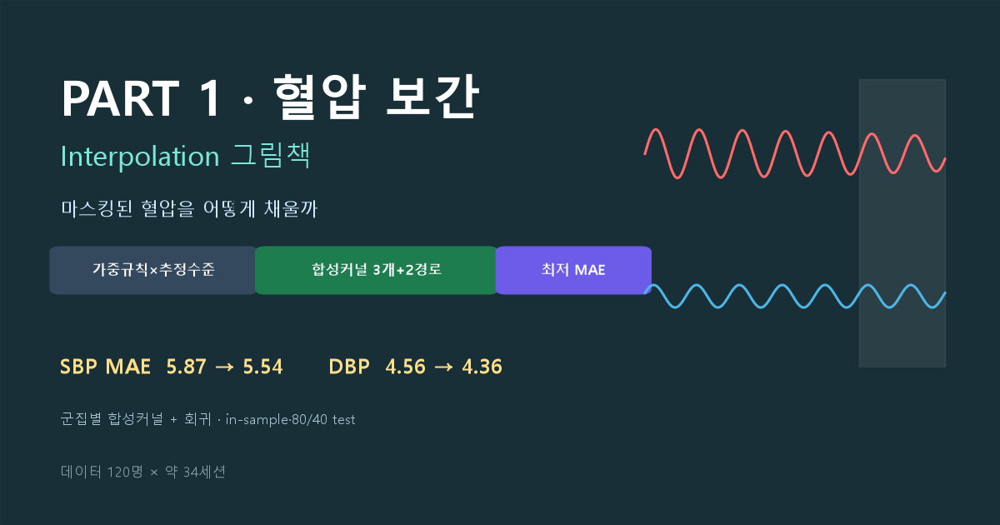
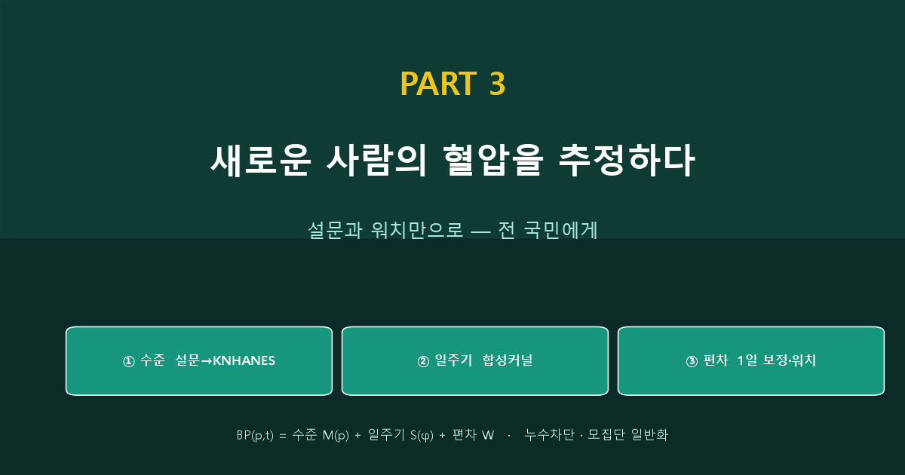
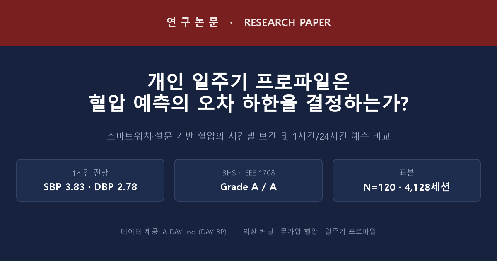

🩸 혈압(BP) 분석 그림책
마스킹된 혈압을 어떻게 채우고(보간), 내일을 어떻게 내다보고(예측), 새 사람의 혈압을 어떻게 추정할까(추정) — 120명 데이터로 푸는 방법론. 팀 이해용.

📋 연구 계획
전체 연구 설계 — PART1 데이터·정제·보간 / PART2 추정(Nowcasting) / PART3 예측(Forecasting). 전 모형계열(시계열·회귀·스펙트럴·perceptron·tree·transformer × single·multi), day1 튜닝·day2~6 학습·day7 예측, 평가는 실측에서만. 환자 대시보드 mock-up. 팀 공유용.
Research Plan
PART 1 · 혈압 보간
마스킹된 혈압을 주변값·합성커널로 복원. 가중규칙×추정수준, 군집별 합성커널 3개+2경로 회귀. 120명 부록.
Interpolation
PART 2 · 혈압 예측
개인 시계열로 day6 24h 예측. 위상커널·합성커널·군집·ML 13모형, static/dynamic, BHS 등급, 선행연구 비교. 120명.
Forecasting
PART 3 · 혈압 추정
혈압 이력 없는 새 사람을 위한 3단계 분해 — 설문(KNHANES 외부앵커)으로 평균 수준, 1일 보정으로 개인 확정, 연령×성별 합성커널로 일주기. 누수차단·전국 일반화. 120명.
Estimation
데이터 120명 × 약 34세션 · 보간 전용(PART1) / 외생 웨어러블 포함(PART2) · 분석·그림 자동 생성